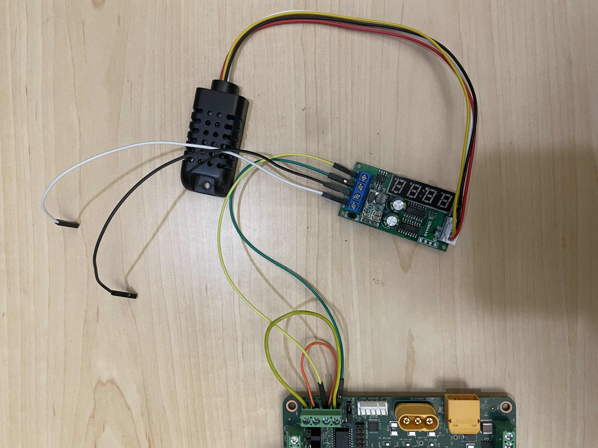

KD240 BIST Board Setup¶
Hardware Requirements¶
Board Setup¶
This page shows how to set up the KD240 before running the BIST application.
Refer to the KD240 Board and the Interface layout below for connector reference numbers:

The following image shows a KD240 with all the hardware connected.
The BIST application requires the following hardware setup to run the full suite of hardware tests:
USB Flash Drive (x2)
Connect a USB Flash Drive to each of the two USB ports.
RS485 Temperature and Humidity Sensor (x1)
Connect the RS485 Temperature and Humidity sensor as below on the J22 Connector on the KD240. Obtain a separate 12V power supply to connect the two loose jumpers as shown in the following image, one to GND(black wire in image) and the other to 12V Supply (white wire in image).

Note: Make sure that the J21 jumper is on 1-2(RS485-AB) combination.
Ethernet Cable (x3)
Connect an Ethernet cable from each of the three Ethernet ports on the KD240 to the host machine via a switch.
PMOD CAN (x1)
Connect the PMOD-CAN test point headers to the J2 connector on the KD240. Connect the PMOD-CAN(J2) to CAN 2.0(J18) using jumper wires as shown below:
Connect GND on J2 to GND on J18
Connect CANH on J2 to CANH on J18
Connect CANL on J2 to CANL on J18
Brake and 1-wire
Connect Pin1(Brake) on J46 to the pin2(Sense) on J47 in loopback.
Motor Kit (x1)
Connect 24V power supply to J39
Connect encoder header pins to J42
Connect Motor’s AC power jack to J32
Next Steps¶
Copyright © 2023 Advanced Micro Devices, Inc